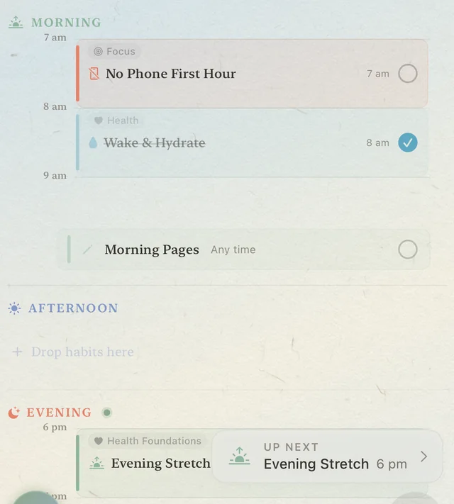
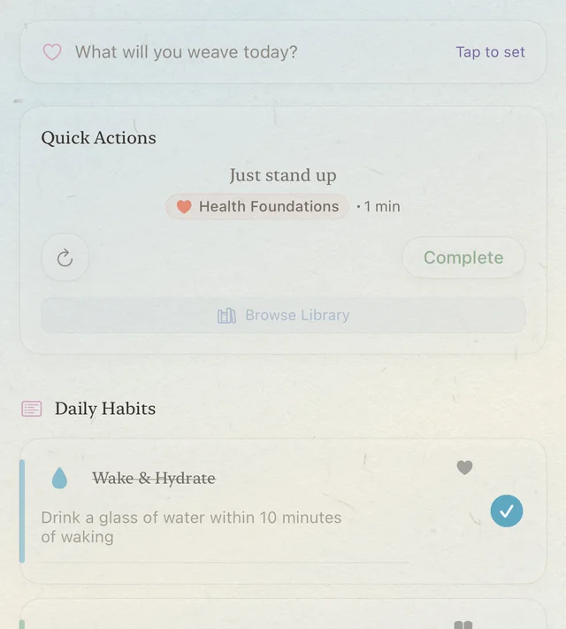
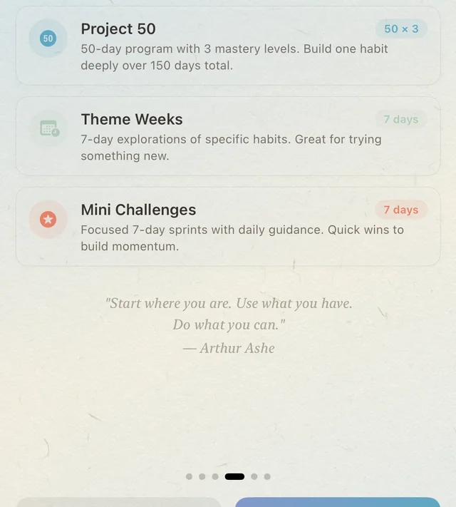

I

Simple Mode
Three habits, three slots. Drag them into your morning, afternoon, or evening and just do them.
Free
The Weaver’s Grimoire
Reverie Weaver is a gentle habit companion for iPhone and iPad. Show up imperfectly, return when you can, and let a grimoire of small days write itself, without ads, accounts, or judgment.
Free to start. Weaver+ when you want more.
Coming to the App Store.

Chapter I · The Desk
Every tapestry begins with one honest thread.
Reverie Weaver opens in the mode that suits your day. Choose how much of it to see, and change your mind whenever you like.
I

Three habits, three slots. Drag them into your morning, afternoon, or evening and just do them.
II

The complete Weaver: habit zones, programs, timers, reflections, and the Loom. Open it when you’re ready, and switch back whenever you like.
III

Project 50, Theme Weeks, and Mini-Challenges: structured paths for building something new, with rest days and forgiving windows built in.
Chapter II · Grace
The return is the victory.
Most habit apps are built on streaks and scolding. Reverie Weaver is built on coming back.
A day can be a Seed, a Sprout, or a Bloom, so a hard day still counts. Rest days are part of the plan, and challenge windows leave room to miss a day.
A Seed day still counts. Consistency beats intensity.

“The strongest thread is the one that was broken and mended.”
The Mended Thread · Resilience · Constellation IX
Chapter III · The Loom
Raise your sail; let effort move with the wind.
The Loom is where the day takes shape.
A timeline of your hours, three priorities for the day, and a focus timer with soft ambient sounds, all in one calm view. In landscape, Focus Sound Studio keeps Music and Atmosphere on separate, adjustable layers. Turn a PDF schedule, or a photo of one, into tasks. The text is read on your device and never uploaded.

Chapter IV · The Archive
It’s okay to slow down. Every week restarts your story.
The Archive reads your weeks and months the way a good friend would.
Weekly and monthly views, daily intentions, and reflections you can write, add photos to, and export. When a week goes quiet, the insights stay kind.

Chapter V · The Grimoire
Every tapestry begins with one honest thread.
Every habit you keep adds a thread. As the threads gather, the Grimoire opens: thirteen constellations with lore of their own, six Weaver levels from Apprentice to Transcendent, seasons that turn as your journey does, and notes found tucked inside the loom.
Some pages stay hidden until you’ve earned them. All of it is free, and none of it is a leaderboard. The Grimoire is only ever yours.
“The loom does not judge the trembling of new hands. It only asks that you return tomorrow.”


A prologue and twelve chapters, revealed gradually as your journey grows. Each card is sealed until you earn it. Turn one over to read the hint carved on its back.
Your level grows with the threads you weave: every completion adds one.
Beyond a thousand come the prestige threads: Silver, Golden, Celestial, Eternal, and Mythic Weaver.
At each level, a new note turns up in the frame, written by someone who wove before you. The first is waiting from day one. The rest stay sealed.
You have found a folded paper tucked between the warp strings. The handwriting is small and careful:
“If you are reading this, you have begun. That is the hardest part. I was like you once—uncertain, starting something I couldn’t yet name. I left this note because I wanted you to know: the loom does not judge the trembling of new hands. It only asks that you return tomorrow.”
It is unsigned.
Chapter VI · Private by default
Reverie Weaver keeps what you write on your device. There is nothing to sign up for, nothing to log in to, and nothing quietly counting what you do.
Chapter VII · Plans
The forgiving core is free. Browsing the whole Habit Library always stays free too.
Everything that makes it forgiving.
Breadth and depth, for when you’re ready.
Weaver+ is planned at $3.99 a month or $24.99 a year in the US, with a 7-day free trial on the annual plan for eligible Apple Accounts. A $59.99 lifetime purchase may appear only during the year-turning season, from December 20 through Lunar New Year’s Day. Your App Store shows the product, eligibility, and price in your own currency before purchase.
We won’t count down at you. No timers, no pressure.
Hello.
Reverie Weaver is coming to iPhone and iPad. Until then, the Gentle Guide shows what a first day looks like.